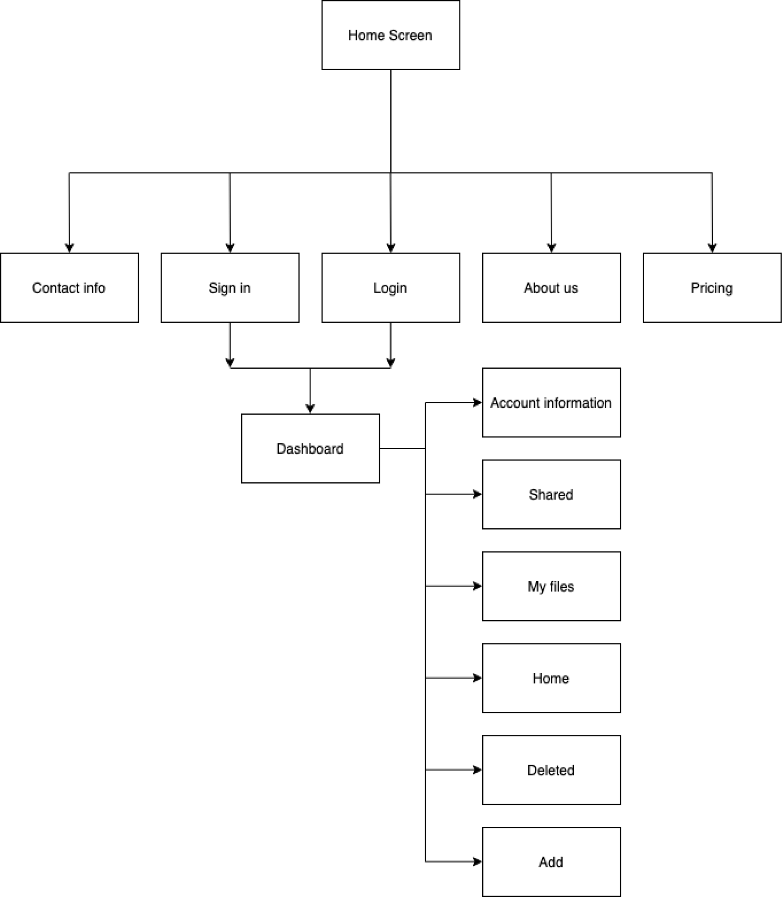
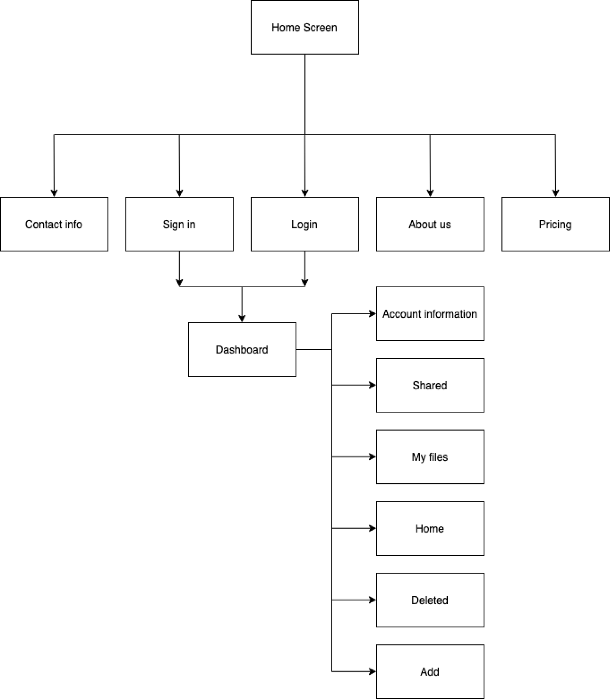
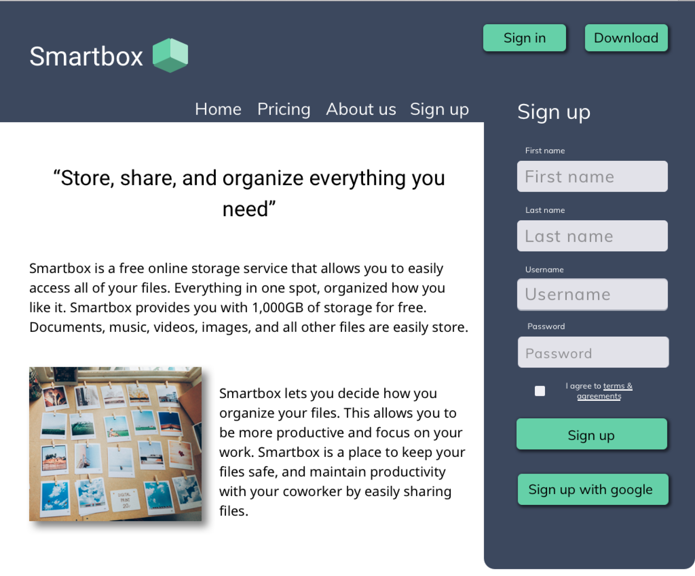

Smartbox gives users a platform to seamlessly enjoy organizing, storing, creating and sharing content with this online storage app.
PrototypeOverview
Problem:
Many online storage users do not feel their needs are being met with the difficulties they face when trying to store, organize, create or share content online.
Solution:
Smartbox decided to feature their ease of sharing, organizing, and storing content. The storage system easily allows users to store as much content as they want in several different ways. They can create content on the website (or app) while easily collaborating, or communicating with others. The information was designed to be accessed in recognizable spots so all features are easily seen by all users.

Discovery
Data:
13.9% of the people tested, are not confident using their current system.

Data:
45.2% use a type of online storage for work or school purposes.

What was learned:
Users are confused, and frustrated with their experience.
Personas:

Daniel, who focuses on using onlinde storage for work purposes, is frustrated in not knowing all of the features or being able to use features to enhance his experience.

Susie uses her cloud storage for her personal life, and organizing important and meaningful information. She is frusterated with the confusion of the features, and relies heavilty on storing everything she can.
Competitive Analysis:
While creating a SWOT analysis of major online storage sites, it was identified that people like all in one inclusive sites but need a more simplistic, user friendly interaction. Pinterest was very visual, but had lack of information and accessibility. Dropbox had too many features that blended together. Google has easy access, but focuses primarily on creating content. In the end, it was discovered that a need for an all inclusive sight is needed, but with a more accessible approach to all features.
Google Drive

Dropbox

Information Architecture
User Stories:
I created user stories that reflected the results of my user survey. I ranked them based on priority, and I ended up with 3 highest priorities.


User Flow:
I then created user flows based on my 3 high priorities. The user flow was laid out so the user can find all features in one spot. All 3 priorities have an identified spot on the users dashboard. Once the user was on the dashboard all high priorities could take place. This allowed me to identify how I wanted each priority to stand out to the user.
 

Branding
Logo
Sketch:
Sketches started out revolving around space, boxes, sharing, collaborating, and mail

Mock up:
Were trying to encompass everything that made Smartbox: Sharing, storing, creating. However, it did not feel unique enough, so we switch to mkaing a 3-D box
Final:
I created the Smartbox logo to appear as a box. I wanted to continue using the brands main color, but make it more intriguing so I made the box 3D. Heebo was chosen for the Logo because it is a simple, and neat font that fits the brands identity.
Color Palette:
Sticking to neutral tones like gray will help our main focus be on the teal. All buttons and active buttons will be in this color to help users always identify where the features are located.

Typography
Heebo is a more unique font for the brand and will therefore be used for titles and the logo. Muli is very neat and clean. It distinguishes itself from other fonts, but comes across natural. Noto Sans is also neat and very easy on the eyes which is why it is used for paragraphs.
Wireframes:
I tested usability with some basic wireframes. Each user was assigned a task to: sign in to an account, sign up for an account, and organize content. Each task took the user on a unique route of the site. It was found out that users had a difficult time signing up due to an extra page, that page was removed. After identifying the issues in my wireframes, I fixed them when designing the mockups.
Perference Testing:
When testing the hero image at the top of the homepage, 80% of users described they felt the teal was overwhelming and that they preferred the navy.
The other idea I tested was for pricing. Having less information or more information. It was split 50 - 50, and I decided to go back and try again because I did not feel it was representing the brand. I decided on a more simplistic look that helps the information be more legible and easy to read.


Usability Testing:
I did multiple testing throughout this process with different types of users. In the end there were some changes that helped my users access the website easily and more comfortably.
Changes made:
Got rid of a second sign up page
Got rid of signing up on the home screen
All tabs were left aligned on the dashboard
Making sure teal is only used for active buttons
More visuals on the dashboard (preview of the files)
I am confident that this product helps solve the problem that many users face when using online storage while correctly representing the brands identity.
Visual Design
Home Screen

Dashboard

Conclusion
Overall, Smartbox was very successful after testing. All of the problems were solved, while still marketing to key users. Even though the login, and lack of structure did not work well, it helped make the system improve. Originally, it also had an individual and team mode. Users can switch between personal and business accounts, but it did not work as planned. Users wanted everything together or completely separated because they rarely will use both accounts simultaneously. The doubts going into this project were if we can compete with the competitors and find a unique market to add on to. What surprised me the most was how users relied heavily on structure. If given more time, I would go back and test more layout options for the homescreen of the online storage. Keep it visual but add some more unique features that users want/need. I learned how much research is needed for every decision made in this process. Any decision made needed to have proof that users responded to it. In the future, we will use this information to help branch our market out more to students.